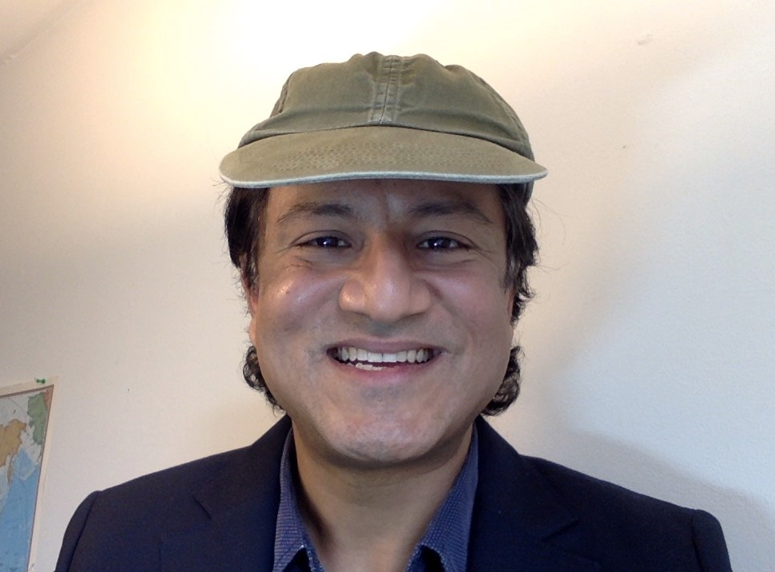

Welcome to Awakened Imagination Group of Projects
Mission: Explore space to improve human reality and promote a sustainable, peaceful, and strategic
presence in the outer space for the benefit of all
I. Stewardship & Governance
- Secure, defend, and maintain outer space for civilian development.
- Support international treaties for debris management and conflict prevention.
- Promote global cooperation and equitable sharing of space resources.
II. Life & Sustainability
- Create sustainable O'Neill colony clusters for multi-generational life.
- Drive massive-scale agricultural yields in space to solve global food scarcity.
- Enhance high-level health and safety protocols for space environments.
III. Future Infrastructure
- Develop the infrastructure for Deep Space (Mars to Jupiter).
- Establish foundations for high-yield off-world manufacturing and agriculture.
- Ensure Superabundance is dedicated solely to uplifting all of humanity.
In 2018, inspired by Patrick McCray's book titled The Visioneers, I started thinking about the 'responsibility of our creations' and our
interactions with our very own creations. Being fortunate to work in the tech industry prior to, I always enjoyed
thinking about how we as human interact with technology and the impact that this interaction has on us. As a
dreamer, I then starting meditating on the possibility that unlocking the inner solar system's potential could
address many of Earth's challenges.
As a parent, I have a dream for the well-being of future generations, where humanity rises above earthly struggles
and reaches for the stars to create a better world. This vision hinges on a collaborative, safe, secure,
sustainable, and ethical approach. Driven by this thought, I sketched an initial diagram, a copy of which you can
witness in it's original form below.
As Les Brown would say, "Shoot for the stars. Even if you miss, you'll land on the moon." With this mindset, we can
achieve greatness beyond our wildest dreams. Or as the late Lieutenant Neil Armstrong would say, 'go to places
beyond belief.'
 Going to space is a big part of ensuring that we can all benefit from the coming age of abundance.
Going to space is a big part of ensuring that we can all benefit from the coming age of abundance.
At the Awake group, I committed towards making the world that we want to live in. I (Adeel Khan) hope that you will
join us on this journey. I want to borrow from the same mechanisms that led towards the enablement of Wikipedia and
help put a structure in place for developing outer space and AI safety. The proceeds are something that should be
deployed for the collective benefit of all of humans, the healing of the biosphere and towards ensuring that the
Future of Life is increasingly better. For these reasons and more, I would like to setup mechanisms by which the
Awake group operates in as transparent a manner as possibly. With the proceeds going to endeavours via an
organization that is going to be setup as a 'public benefit organization.'
Here are the areas of impact and and the developing areas of interest that we have identified:
- Our existing mission is to help feed the world quality and nutritious foods (including space-grown olive trees
and peaches) by leveraging orbiting greenhouses, Moon-based installations, and O'Neill colonies. We also want to
grow hearts, lungs and other organs in orbit. Because the zero gravity environment is great for growing organs. As
well, move all heavy and polluting industries away from Earth. Thus setting the foundation of a manufacturing base
in space.
- We are keen on running all of our operations in a radically transparent manner. Whereby the ventures sustain
themselves and we can harness energy, ideas, suggestions from all the different parts of the reality. And rewards
are transferred based on the contribution of the individual.
- Going back to our vision, we want to enable beautiful & healthy surroundings on and off of earth. For ourselves
and the future generations. Starting with a small scale agricultural and medical facility in space makes good
sense. Because lots of teams from different backgrounds can collaborate to make this vision a reality. It is our
intention that these facilities can be scaled in an exponential manner, in a manner that is
safe/secure/equitable/sustainable and satisfactory for all parties and individuals involved. Time is of the
essence.
- To operate in any domain, you need to secure it. So we want to help secure the domain of space, in a civilian
capacity.
- Help with the introduction of norms and behaviour. So that we can continue to promote the peaceful and
sustainable development of outer space.
- Assist with setting the foundations of a Type
III civilization. In a manner that does not infringe upon the life or quality of life of another being. Find
other life across the Galaxy and the universe at large.
Below: A semi-autonomous manufacturing site that can make copies of itself. As well, help manufacture inventions by
approved vendors and customers. This is a proposed design for an invention and as of right now, Awake Aerospace has
pioneered simple designs to enable this reality. Would love to collaborate with other robotic companies in the
future.

Below is a screenshot of Awake Aerospace's submission to the Governmet of Canada's 'Deep Space Food Challenge'. The
dimensions that we originally conceived, were scaled down a lot, in order to meet the constraints outlined in the
challenge. Unfortunately the submission made was not chosen as one of the teams that will proceed to the next level.
The vision is to have hundreds of thousands or millions of such facilities in non-terrestrial orbits (Meaning, not
Earth's orbit). This is a design that Awake Aerospace will continue iterating on. This design has the potential for
helping solve all of the major problems on Earth. As well, setting the foundations for humans to migrate to secure
and safe O'Neill colonies in the future. The proposition is to start with growing food in outer space. Quality,
nutritious foods for all life. Foods that are free of carcinogens and harmful chemicals.

The '3 stage' AMU (semi-autonomous manufacturing unit). Includes, the main manufacturing site (MMS) (can replicate
itself and re-organize itself in order to make different inventions), fuel tanks and a transporter for moving goods
and services. Produce will be washed, dried and then flash-frozen without the use of chemicals. Multiple
transporters will dock into a singular body (MMS). The re-entry problem is being solved by a lot of other companies.
The overall cycle looks something like this:
- Food is grown in semi-autonomous AMUS. Some activities are performed remotely.
- Transporters take the produce and do a hand-off with a mechanism in Earth's orbit.
- Re-entry and landing at a commercial space port.
- Last mile delivery: Autonomous trucks coupled with robotics. Customers received a box of freeze dried produce.
Overall:
- Making heavy use of robotics and automation is pivotal towards feeding all humans, pets and potentially other
animals.
- We also envision that there is going to be a computing platform operating somewhere in space. With increasing
levels of computation available, computationally heavy tasks like computer vision and writing blocks to the
blockchain can be had. This way, if a mechanism that is not authorized is triggered within the range of or within
our facilities. In such a situation, security and law-enforcement specific procedures and actions will be
automatically initiated.
- Enabling this project in a collaborative, inclusive manner is a good confidence building measure. Tackling food
security is an urgent need and it is also something that could be felt more acutely, given the changing nature of
our climate. We have been sharing a lot of our work openly. But we sense that our work is getting copied and other
parties are throwing money behind the work that we did and calling it their own. Right now, we do not have the
funds to contest this in a court of law. It is our hope that as we raise funds, that there is the development of a
basic legal framework, via which we can ensure that the vision actually materializes the way we intended. Meaning,
that these facilities are leveraged for the purpose of growing quality nutritious foods, growing organs and other
cellular structures of good use. As well for enabling manufacturing facilities for the greater benefit of humans
and all life.

Primary areas of interest
- Foundation for a Type III civilization
Immediate area of focus is to see secure, safe, sustainable and environmentally conscious operations in space. We
will work with any and all parties who adhere to and respect a common set of norms. Parties who are working
towards enabling provisions in order to detect and deter undesirable behaviours. As well, help enable a legal
structure in order to hold bad actors and polluters accountable.
- Semi-autonomous factories in space
When the time is right, when the economics makes good sense and when the domain is secured. This is the time when
we would like to deploy our existing '3 stage' designs for the semi-autonomous factories in space. We worked on
these designs from January 2021 till the mid of July. Both Rusith Gimhana and myself dedicated focused effort
towards turning our back of the envelope ideas into functional designs and simulations. (Note: The team split up
in August, 2021) The primary mission involves enabling manufacturing facilities outside of Earth. As well,
facilities for agriculture in space. Our '3 stage' semi-autonomous factories, will primarily be creating O'Neill
colonies and Stanford Toruses. The intent is that all players and parties can collaborate, compete or mix of
(coopetition) in order to help make life better for all. I (Adeel Khan) am against the placement of heavy weapons
in space. I have love in my heart for all humans and all other life on this planet. World peace is possible. We
must continue changing ourselves and we must continue making investments that will bring more hope and healing. We
are all connected to each other. Perhaps in ways that we have yet to truly recognize and appreciate. Personally,
it has been my mission to change myself and I (Adeel Khan) have had some successes. The work must continue
indefinitely. May my heart be pure and may I continue doing good that is universal, in the world.
- Enable or help enable: Scientific and mining outposts, longer term settlements in particular orbits and also for
deep space exploration (Exploring the solar system and beyond!)
- Exploring Europa in a hygienic manner. Provided no life has been found.
- Extract hydrocarbons from Titan. " "
- Initially we were focused on developing a framework for terraforming Venus. However, in October 2021 it has come
to our attention that there is indeed a high probability that there could be life on Venus. (Source: A talk by Dr.
Sara Seager via the Mars Society Conference). So we scrapped that idea. We'd like to assist with the development
of techniques being developed for sequestering CO2 on Earth. Which was our intent from the get go. Meaning,
reverse engineering the technologies that we were developing in order to deploy them inside of and in the orbit of
Venus and bring these technologies back to Earth. For them to be placed in human-made caves. We've given this some
thought (energy requirements, water intake using sustainable means, new-age techniques via genetics +) and have
done some initial calculations.
Our longer term vision is to see a distributed set of teams in the form of 'swarms' operating on top of the
blockchain technology. Ideally, individuals and teams will come together in order to help manifest good dreams.
The system will have the means and the ability in order to identify meaningful contributions. Basically we'd like
swarms to regulate themselves and then do the heavy lifting. The individuals within those swarms will be
compensated really well for their meaningful contributions. However, this (overall) concept, this thought of
enabling swarms is something that we haven't had a chance to give focused attention to. Clearly, there are many
problems that need to be solved in order for this vision to come true. There are also many legal, ethical, moral
and societal considerations that have to be thought through. Before steps are taken in order to enable this
sub-idea of enabling swarms. The current state of our global healthcare systems, with a keen and particular focus
on the lack of affordable and quality mental health related services. This reality posits that there is a lot of
opportunity here. Next, it is the issue of timing in the form of human well-being. Because if this mechanism is
enabled today, then the swarms are only going to be as good as the quality of the thought processes within these
swarms. Overall, I (Adeel Khan) have this thought that swarms could play a crucial role towards expediting certain
cycles of innovations. As well, could help play a crucial role towards mitigating certain existential risks.
However, the enablement of swarms must never be considered as the only insurance policy towards mitigating risks
existential of a nature.
Sister companies
Values
- Radical transparency.
- Trust.
- Help reduce and to eventually eliminate all unnecessary suffering.
- Promoting freedoms.
- Leave a place better than we experienced it.
 Placed here to make you smile.
Placed here to make you smile.
Team

Adeel Khan
Founder
Father, serial entrepreneur, chief instigator, explorer | "The singularity is near."

Lead ethicist - Your name here
Lead ethicist
Lead the development of policies and frameworks. With a core focus on the (including but not limited to)
specificity and amendments that may be required on the Outer Space
Treaty side of things, maintaining hygiene - solar system wide, making sure that we do not make the
same mistakes on other habitats.

Habitat designer - Your name here
Habitat designer.
An architect by trade. Part sociologist, with a background in psychology. A keen observer of primate
behaviour. You are going to be the primary lead for designing and for helping design physical and virtual
spaces. Whereby the design of these spaces
is going to result into the overall well-being of the inhabitants. You are going to play a pivotal
role towards helping Gerard K. O'Neill's vision come true. In orbit (ONeill structures) and also across the
inner solar system.

Gardener of the Galaxy - Your name here
Gardener
We want you to plant and help plant gardens, polyculture agricultural installations here on earth. As well,
help transform deserts and also do all of this on non-terrestrial habitats. In the spirit of succession
planning, we'd like for you to spend at-least 20 percent of your work-hours coaching, mentoring, guiding and
training gardeners & horticulturists of the future. As well, educating the general population on the best
sustainable practices that are vital and crucial for maintaining our ecosystems. You are inspired by the
work that the many wonderful gardeners have done, throughout the history of our species. At the same time,
you have a respectable disregard for the traditions of the past. You are not afraid to make use of new and
novel approaches, in order to cultivate unique, vibrant, joyous experiences. Ideally, you are part Frank Cabot and part 'Doc' from the Back to the Future series. Bonus points for being
slightly crazy, in a good way.

Materials Scientist - Your name here
Materials Scientist
A PhD in materials science, chemistry (more so focused on the materials side of things), nanotechnology.
You are intimately familiar with the 'emerging technology' arena in the wider material science landscape.
You will be working closely with the chief architect(s), lead engineers and others. Your goal will be to
help develop physical habitats that are completely safe to live in and have resiliency against a variety of
different stressors. Including but not limited to: gravitational effects, radiation, heat, cold, orbital
entry/escape e.t.c

Global Communications Lead - Your name here
Global Communications Lead
Develop policies, procedures and frameworks required. Maintain clear and open lines of communications with
a global list of stakeholders. Conduct scenario specific exercises and drills. Work closely with
relationship managers in order to foster an environment of clear communications and open sharing of
knowledge. For peaceful purposes only.
Global Communications Lead - Your name here
Global Communications Lead
Develop policies, procedures and frameworks required. Maintain clear and open lines of communications with
a global list of stakeholders. Conduct scenario specific exercises and drills. Work closely with
relationship managers in order to foster an environment of clear communications and open sharing of
knowledge. For peaceful purposes only.

Communications Lead for Indigenous Affairs - Your name here
Global Communications Lead
Work hand in hand with the 'Global Communications Lead'. Your core focus would be to identify the needs of
and problems being experienced across the world's indigenous communities. You will engage with and maintain
regular lines of communications with represenatives from the various indigenous communities around the
world. Particularly from regions, where the community may not have a voice on the table and as it relates to
the formulation of laws that are/may impact the quality of life of inhabitants in that community. You will
also be consulting with and regularly updating leaders and stakeholders from the community on space based
programs and initiatives. Seeking their approval and also input and wisdom on how we could do better.

Liaison officer - Your name here
Liaison officer
Responsible for actively managing and nurturing open lines of communications with government and
DoD. Preference will be given to someone who has served in the military, intelligence, law-enforcement (From
a NATO member country)

Director of security - Your name here
Director of security
Responsible for architecting policies, frameworks, protocols, procedures for ensuring the security of
staff, contractors and key personnel. Help secure assets (Physical, digital, virtual, financial,
intellectual property designs in the works ++). Work closely with the CCO - Chief compliance officer.
Preference will be given to someone who has served in the military, intelligence, law-enforcement (From a NATO member country)

CCO - Chief compliance officer - Your name here
CCO - Chief compliance officer
Responsible for making sure that the organization is meeting or exceeding all compliance related audits.
Across the board. Includes compliance specific measures on the ITAR (US
Government) and Export Control on the government of Canada side of things.

Lead Astrobiologist - Your name here
Lead Astrobiologist
Responsible for initiating, maintaining and helping select programs: Geared towards the specific purpose of
making sure that life thrives on non-terrestrial habitats. Activities will include but will not be limited
to: a) Simulating different conditions and seeing what kind of lifeforms will be required b) Engineer the
initial conditions c) Closely work with climate scientists and geneticists. d) Ensure that there is a very
high rate of survival in domed facilities e) Help develop functional plans and procedures for terraforming
the climate to be ideal for human needs.

Lead climate [scientist, modeler, engineer] - Your name here
Lead climate [scientist, modeler, engineer]
Adept at setting up and running detailed simulations. Building models. Background in environmental science,
chemistry, mathematics.

Lead geneticist - Your name here
Lead geneticist at the Awake Group of companies
Background in genetics and synthethic biology. Track record of turning basic research into useful
therapies, products and services.

New age farmer - Your name here
Growing food on non-terrestrial habitats
Background in Ag-tech. Demonstrated track record at inventing designs, innovations, solutions. Basically
the Burt Rutan of farming.

Artist(s) in residence - Your name here
Artist(s) in residence
Inspire and guide a whole new generation of (in random order) scientists, explorers, dreamers, builders,
ethicists, reformers, researchers, human-rights and also animal rights activists ++. You will have full
artistic freedom. You will choose the medium. You will own the rights to your creation. Including any NFTs
(potentially speaking) that you are going to be working on.
For Future partners (employees) at Awake
We offer:
- A collaborative, open, inclusive work environment. Where ideas > heirarchy
- Base salary
- Shares in the organization are going to be allocated based on a) A vesting schedule and b) The human population
will actually determine what the individual contributor's share should be. This is something that we are currently
evaluating. As well, this is something that we are going to build on top of a public/private blockchain.
Effectively speaking, the organization and the original founding team is not going to have control over how the
shares are allocated.
- Benefits. Including but not limited to: Health insurance, basic dental related service (for now), mental health,
vision care (eyeglasses and eye exams for now), sick days (physiological, psychological, emotional well-being).
Note: Everything is super basic right now. As we do not have sales and we have not raised any money.
- Schedule: I (Adeel Khan) work almost all the time. I get 8 to 9 hours of sleep and dedicate quality time for
exercise and socializing. This is a startup and so you are expected to work almost all the time. Suffice to say,
you must enjoy the work that you are doing and you should be working almost all the time. Within reason. If you
like to work, are eager to learn, have a growth mindset, possess a good work ethic --> then you can be trained in
most areas. I personally invest a lot of time with new hires. We have an evolving process in place. Happy to share
the details.
- Open to suggestions. What else should be added to this list?
Our work to date
Problems/Opportunities space
- Technical
- No known technology exists at
TRL Level 9. That can
safely take (and bring back) humans or machines to the destination of choice.
- Many problems will need to be solved, before an autonomous or semi-autonomous manufacturing facility can be
launched in the orbit of a planetary body. Some of these very issues, and in various domains have been
highlighted below. However, this is definitely not a comprehensive list. It is critical to highlight that
placing larger structures in Earth's orbit can cause a whole host of security and safety related issues. Now and
in the future. As well, if compromised this can create some serious vulnerabilities for global safety. This is
the reason why the development of deep space is being advocated. This way, goods and material can be moved
throughout the solar system by leveraging the ITN (Interplanetary
Transport Network). Also considering the financial and other costs involved, reusable rocket-propulsion
technology will not suffice in order to move larger amounts of mass to and from orbit. In a manner whereby
security and safety hazards and pollution is not left after some years of activity. This is why the proposition
of non-rocket based propulsion technologies being developed is necessary.
- Financial
- As of this point in time. The following costs are not known:
- Actual cost towards successfully completing specific milestones is not yet known. Hence, the overall cost
is also something that is not known as of this point in time.
- The platform enabled on top of the 'smart contract' technology is yet to be developed. We anticipate a world where
anyone/anywhere can contribute towards the enablement of this project. And be adequately compensated for doing
so. Provided the work is of sufficient quality.
- Economic
- Will a for-profit mechanism still be operational. Why or why not.
- It is said that asteroid Psyche alone contains, quote: 'US$700 quintillion worth of gold, enough for
every person on earth to receive about US$93 billion.' Source: link
- Ethical
- Security: Provisions against ensuring that the technology is not abused and weaponized.
- Life on other planets: As highlighted above, there is evidence to suggest that there could be life on other
planets within the solar system. We should focus on enabling structures that are manufactured by humans.
Terraforming existing planets does not set a good precedent in the short, mid or longer term. Particularly for
the the time range when we aim to explore the next star systems. However far away in the future that may be.
- What will humans do in a world of Superabundance? What provisions must exist so that problems of ennui do not
become chronic problems. What measures must be under-taken in order to think about and mitigate from the harmful
effects of Superabundance & the need to start today. Two videos that I (Adeel Khan) have posted on my channel on
Youtube on November the 1st, 2024 are on topic here.
link
- Legal